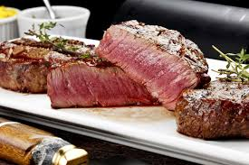

Bistecca

Description
Here is the best recipe in the world for a BISTECCA as good as the one of a Chef made.
A difficult recipe with an elevate cost but with an amazing flavor.
Ingredients
- Meat: 1 (2 1/2 pound) choice or prime porterhouse steak
- Lemon: 6 lemon wedges
- Fresh herbs: 4 sprigs fresh rosemary, chopped
- Olive oil: 3 tablespoons Tuscan olive oil
- Spices and seasonings: Moist, grey sea salt and freshly cracked pepper to taste
Directions
- Press chopped rosemary onto both sides of porterhouse steak; set onto a plate and allow to marinate at room temperature for 1 hour.
- Start an outdoor grill using hardwood charcoal, such as hickory. When coals are white and glowing, arrange for high heat.
- Gently brush or rub olive oil onto steak, then season to taste with sea salt and pepper.
- Place steak onto grill, and cook until a dark, golden brown (not burnt) crust forms, 5 to 10 minutes depending on thickness of meat. Turn over, and continue cooking until golden on the other side, 5 to 10 minutes more. When finished, place steak onto a platter, and allow to rest for 10 minutes.
- To serve, remove the two pieces of meat from the bone, and replace the bone onto the serving platter. Trim any unwanted fat from the round (tenderloin) steak, slice into 6 equal pieces at an angle to the grain, and fan out on one side of the bone. Slice the rectangular (loin) steak into 1/4-inch slices at an angle to the grain. Fan out on the other side of the bone. Finish by garnishing the platter with lemon wedges and a sprinkle of additional sea salt.